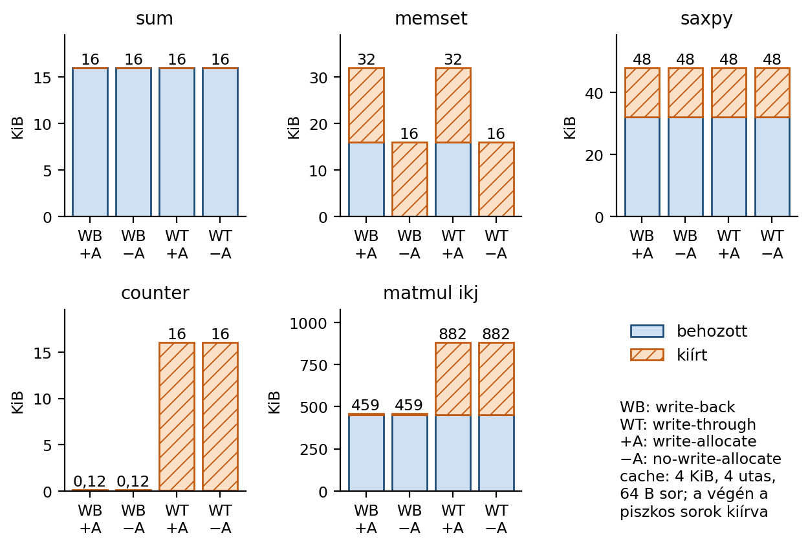
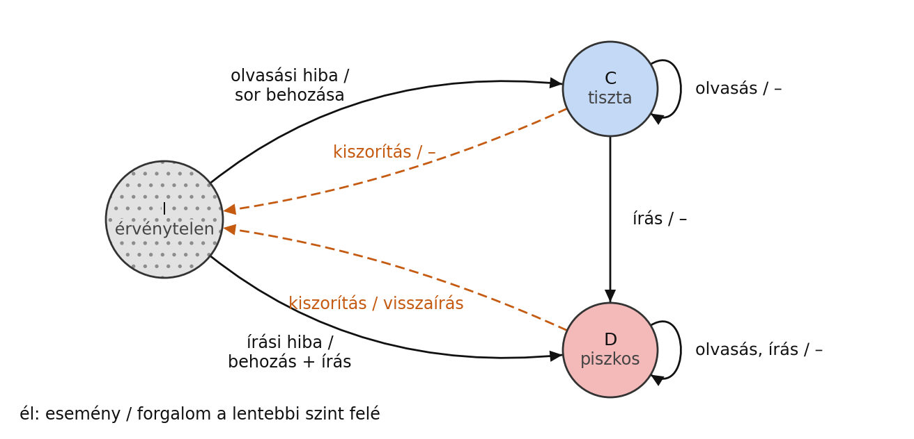

A Cache-szervezés: leképezés és címbontás modellje szerint egy 12 utas cache-ben 13 ütköző sor körbejárása minden eléréskor hibázhat. Vegyünk egy kisebb példát: egy négyutas halmaz, öt blokk, ciklikusan, sokszor egymás után. A legrégebben használtat kidobó politika (LRU) itt egyetlen találatot sem ér el, egy teljesen véletlenszerűen cserélő politika viszont a modellben a hozzáférések 59%-ában talál. A „legokosabbnak” hangzó szabály a legrosszabb.
Az írásnál hasonló döntés vár. Ha egy ciklus 4096-szor növel egyetlen
számlálót (a counter kernel magja), a memória felé
mindössze 64 bájt mehet ki, vagy 16 KiB, attól függően, hogy a cache az
írást azonnal továbbadja-e. Ez az alfejezet a két döntést tárgyalja:
kit dobjunk ki, ha egy halmaz megtelt, és mikor
írjunk le egy módosítást.
A cserepolitika (replacement policy) a jövőt próbálja megjósolni a múltból. Az ideális cache azt a blokkot dobná ki, amelyre a legtovább nem lesz szükség, de a jövőt nem ismerjük. A valódi politikák heurisztikák: aki régen nem kellett, az valószínűleg most sem kell (időbeli lokalitás). Ahol a program nem ezt a mintát követi, ott a heurisztika téved.
Olvassa az ábrát a 6. oszlopnál: az E blokknak helyet
kell csinálni, és minden politika mást dob ki. Az LRU a
B-t, amelyre a következő lépésben szükség lesz, az OPT a
D-t, amelyre a legkésőbb.
Az írásnál a kérdés az, hány helyen kell azonnal frissíteni a másolatot. A gyors megoldás: írjuk csak a cache-be, és jegyezzük meg, hogy a sor „piszkos”; a memória majd akkor kapja meg, amikor a sor úgyis távozik. Az egyszerű megoldás: minden írást azonnal küldjünk tovább is.
Ha egy hiba olyan halmazba esik, amelyben nincs üres út, a politika kiválasztja az áldozatot (victim).
Definíció. - LRU (least recently used): a legrégebben használt blokkot cseréli. Halmazonként az utak teljes használati sorrendjét kell tárolni. - FIFO (first in, first out): a legrégebben betöltöttet; a találat nem változtat a sorrenden. - Véletlen (random): egy álvéletlen generátor választ; nincs állapot halmazonként. - OPT (Bélády optimuma): azt cseréli, amelynek következő használata a legtávolabbi. A jövőt kell hozzá ismerni, ezért hardverben nem valósítható meg; mérceként szolgál, mert bármely sorozaton a lehető legkevesebb hibát adja.
Fa-PLRU. Valódi LRU-hoz útnál bit és minden találatnál átrendezés kell. A fa-pszeudo-LRU (tree-PLRU) bittel közelíti (itt kettőhatvány). A bitek egy bináris fa belső csomópontjai; minden bit azt mutatja, melyik oldalon van a következő áldozat (0: bal, 1: jobb). Két szabály:
Négy útnál három bit van: a gyökér, a bal csoport (0. és 1. út) és a jobb csoport (2. és 3. út) bitje; az állapotot ebben a sorrendben írjuk. A fa-PLRU nem azonos az LRU-val: csak azt tudja, hogy melyik oldalt használtuk utoljára.
Beszúrási politikák: az RRIP elve. Nemcsak az számít, kit dobunk ki, hanem az is, milyen „fiatalnak” vesszük az új blokkot. A statikus RRIP (re-reference interval prediction, SRRIP) minden blokkhoz kétbites „várt újrahasználati távolságot” tárol: beszúráskor 2 (hosszú), találatkor 0 (hamarosan), az áldozat az első 3 értékű út; ha nincs ilyen, minden értéket eggyel növelünk. Az egyszer látott blokk így hamar kiesik, a többször használt tovább marad. Ez véd a pásztázás (scan) ellen: amikor a program egyszer végigmegy egy nagy tömbön, az LRU kidobja érte a ténylegesen fontos blokkokat. A modern processzorok pontos politikája nem nyilvános és verziófüggő (ellenőrizendő); a valódi L1/L2 politikák többsége a PLRU vagy RRIP valamilyen változata [S-HP].
A ciklikus minta. Ha egy halmazban ciklikusan blokkot használunk, az LRU mindig éppen azt dobja ki, amelyik a következő lépésben kell, ezért a bemelegítés után minden elérés hiba. A FIFO ugyanígy jár. Az OPT itt elérésből csak egyszer hibázik, a véletlen politika pedig a kettő között van, mert néha „szerencsésen” a megfelelőt tartja bent.
Írási találatnál két lehetőség van:
Írási hibánál is két lehetőség van:
A szokásos párosítás a write-back + write-allocate (a további írások a cache-ben maradnak) és a write-through + no-write-allocate. A write-through gyengéjét az írási puffer (write buffer) enyhíti: néhány bejegyzéses tár, amelybe a mag beírja az adatot és halad tovább, a puffer pedig ráér kiírni. Az összevonó (coalescing) puffer az ugyanarra a sorra eső írásokat egyetlen tranzakcióvá egyesíti.
Egy teljes sort felülíró írásnál (például nagy tömb nullázásánál) a
write-allocate fölöslegesen olvassa be a régi tartalmat. Ezért vannak a
gépekben olyan utasítások, amelyek a cache-t megkerülve írnak (x86-on a
nem temporális tárolások, például movnt), és egyes
processzorok a sorozatos teljes soros írást maguktól felismerik
(verziófüggő, ellenőrizendő).

Az ábrán a különbség ott nagy, ahol a program ugyanarra a
helyre sokszor ír (counter, matmul
mátrixa), és ott nulla, ahol csak olvas (sum) vagy minden
bájtot pontosan egyszer ír egy előtte már beolvasott sorba
(saxpy). A memset mutatja a write-allocate
fölösleges beolvasását.
Továbbvitt eredmény. Az archkit.cache a
cserepolitikákat (lru, plru,
fifo, random, srrip,
opt) és az írási politikákat
(write="back"/"through",
allocate) forgalomszámlálással modellezi; erre épül az AMAT, a hibák osztályozása és a többszintű cache,
a Cache-szimulátor és cache-tudatos programozás
és a A koherencia problémája és az
MSI-protokoll.
A Véges állapotgépek nyelvén egy write-back + write-allocate cache egy sorhelyének három állapota van: I (érvénytelen), C (tiszta: a memóriával egyező másolat) és D (piszkos: a cache-é az egyetlen friss példány). Az átmeneteket a mag kérései és a cserepolitika döntése váltják ki, a kimenet a lentebbi szint felé küldött kérés.

Egyedül a D → I átmenet küld adatot lefelé. A
Cache.line_state metódus pontosan ezt az állapotot adja
vissza. Több processzor esetén ugyanez a gép kap még állapotokat és
buszüzeneteket: ez lesz a koherenciaprotokoll.
Továbbvitt eredmény. A cache-vezérlő sorhelyenkénti állapotgép (I, C, D), amelynek átmeneteit a kérések és a csere váltják ki, kimenetei a behozás és a visszaírás; ezt a A koherencia problémája és az MSI-protokoll és a MESI és MOESI terjeszti ki.
LRU és fa-PLRU a négyutas halmazon, a sorozat
A B C D A E B A C D. Az utakat 0–3 jelöli; a LRU-sorrendet
a legrégebbitől írjuk. Az első négy elérés hiba, az utak sorban
töltődnek: A B C D.
| # | Blokk | LRU: eredmény, sorrend | fa-PLRU: eredmény | PLRU bitek utána |
|---|---|---|---|---|
| 1–4 | A B C D | 4 hiba; A B C D |
4 hiba | 0 0 0 |
| 5 | A | találat; B C D A |
találat | 1 1 0 |
| 6 | E | hiba, ki B; C D A E |
hiba, ki C |
0 1 1 |
| 7 | B | hiba, ki C; D A E B |
találat | 1 0 1 |
| 8 | A | találat; D E B A |
találat | 1 1 1 |
| 9 | C | hiba, ki D; E B A C |
hiba, ki D |
0 1 0 |
| 10 | D | hiba, ki E; B A C D |
hiba, ki B |
1 0 0 |
A 6. lépés a lényeg. A bitek 1 1 0: a gyökér
1 a jobb oldalra mutat, a jobb csoport bitje 0
a bal levélre, ez a 2. út, benne C. Az LRU ezzel szemben a
B-t dobná ki, mert az a legrégebben használt. Itt a PLRU
„tévedése” szerencsés: a 7. lépés találat lesz. Összesen LRU 2, PLRU 3
találat; ugyanezen a sorozaton a FIFO, a véletlen (1-es magval) és az
OPT 4-et ér el. Egy rövid sorozaton elért eredmény nem rangsor: a
politikák erejét sok és jellegzetes nyomon mérjük.
Írási forgalom. 64 bájtos sor, a
counter: 4096-szor olvas és ír egy 4 bájtos számot.
Write-back + write-allocate: az első olvasás behozza a sort (64 B),
minden további elérés találat, a végén egy visszaírás (64 B). Összesen
128 B. Write-through: a behozás után mind a 4096 írás 4 bájtot küld
lefelé:
B, 4096 tranzakcióban. Összevonó írási pufferrel a tranzakciók száma
1-re csökkenhet, ha a puffer addig nem ürül.
A táblázat ellenőrzése és a politikák összevetése a ciklikus mintán, ahol a véletlen politikát több maggal átlagoljuk:
import sys; sys.path.insert(0, "code")
from statistics import mean
from archkit import cache as C
for pol in ("lru", "plru"):
run = C.run_set("ABCDAEBACD", 4, pol)
print(f"{pol:5}", " ".join("T" if s["hit"] else (s["evicted"] or "·") for s in run),
" találat:", sum(s["hit"] for s in run))
trace = C.cyclic_trace(5, 50) # 5 blokk 50-szer, 4 utas halmaz
for pol in ("lru", "fifo", "plru", "opt"):
s = C.Cache(256, 64, 4, pol).run(trace)
print(f"{pol:6} találati arány: {s.hit_rate:.3f}")
rnd = mean(C.Cache(256, 64, 4, "random", seed=k).run(trace).hit_rate for k in range(1, 101))
print(f"random (100 mag átlaga): {rnd:.3f}")lru · · · · T B C T D E találat: 2
plru · · · · T C T T D B találat: 3
lru találati arány: 0.000
fifo találati arány: 0.000
plru találati arány: 0.004
opt találati arány: 0.736
random (100 mag átlaga): 0.590Az OPT itt a hideg indulás után minden negyedik elérésnél hibázik. A
fa-PLRU a ciklikus mintán alig jobb az LRU-nál. A pásztázásos mintán
(ABAB, egyszer látott blokkok, megint ABAB) a
beszúrási politika számít:
for pol in ("lru", "srrip", "opt"):
run = C.run_set("ABABCDEFABABGHIJABAB", 4, pol)
row = "".join("T" if s["hit"] else "H" for s in run)
print(f"{pol:6}", row, sum(s["hit"] for s in run))lru HHTTHHHHHHTTHHHHHHTT 6
srrip HHTTHHHHTTTTHHHHTTTT 10
opt HHTTHHHHTTTTHHHHTTTT 10Végül az írási stratégiák forgalma és az írási puffer hatása. A
counter nyoma felváltva olvasás és írás ugyanarra a
címre:
counter = [(0, i % 2 == 1, 4, 0) for i in range(2 * 4096)]
res = C.compare_write_policies(counter, 4096, 64, 4)
for (write, alloc), s in res.items():
print(f"{write:7} allocate={alloc!s:5}: behozott {s.bytes_read:5} B, "
f"kiírt {s.bytes_written:5} B")
for entries in (0, 4):
b = C.coalescing_write_buffer(counter, entries=entries)
print(f"írási puffer {entries} bejegyzés: {b['transactions']:4} tranzakció")back allocate=True : behozott 64 B, kiírt 64 B
back allocate=False: behozott 64 B, kiírt 64 B
through allocate=True : behozott 64 B, kiírt 16384 B
through allocate=False: behozott 64 B, kiírt 16384 B
írási puffer 0 bejegyzés: 4096 tranzakció
írási puffer 4 bejegyzés: 1 tranzakcióA compare_write_policies a végén a bent maradt piszkos
sorokat is kiírja, hogy a write-back ne tűnjön ingyennek. A
coalescing_write_buffer időzítés nélküli modell: a puffer
csak akkor ürít, ha megtelik, valódi hardverben a puffer folyamatosan
fogy.
memset vagy nem temporális tárolás, és méréssel ellenőrizze
(a viselkedés processzorfüggő).1. (A) Játssza le kézzel az
A B A C D E A B sorozatot négyutas halmazon LRU és FIFO
politikával. Hány találat van, és mely blokkok esnek ki?
2. (A) Egy négyutas fa-PLRU halmazba sorban
betöltöttük A B C D-t (utak 0–3), majd elértük
B-t. Melyek a bitek, és mit dob ki a következő hiba? Mit
dobna ki az LRU?
3. (B) Egy ciklus egy 1 MiB-os int32
tömb minden elemét eggyel növeli (egyszer). Adja meg a lentebbi szint
felé menő bájtokat és a tranzakciók számát (a) write-back +
write-allocate, (b) write-through + no-write-allocate cache-ben, 64
bájtos sorokkal, írási puffer nélkül. Tegye fel, hogy a tömb sokkal
nagyobb a cache-nél.
4. (B) Bizonyítsa (érveléssel), hogy -utas halmazban blokk ciklikus bejárásánál az LRU a bemelegítés után minden elérésnél hibázik.
5. (C, programozós) Mérje meg szimulációval 4-utas halmazon blokkos ciklikus mintára az LRU, az OPT és a véletlen (100 mag átlaga) találati arányát, és magyarázza a tendenciát.
6. (C) Adjon olyan hozzáférési sorozatot, amelyen az LRU legalább egy találattal többet ér el a FIFO-nál, és indokolja, miért.
Megtelt halmazban a cserepolitika választ áldozatot: LRU (legrégebben
használt), FIFO (legrégebben betöltött), véletlen, fa-PLRU
(
bit, az LRU olcsó közelítése) és RRIP (beszúrási politika, pásztázás
ellen). Az OPT a jövő ismeretében optimális, mércének jó. Az
elemű ciklikus minta az LRU-t teljesen megöli. Írásnál a write-back a
módosítást a piszkos sorban tartja, a write-through azonnal továbbadja
(írási puffer enyhíti); írási hibánál a write-allocate behozza a sort. A
szokásos write-back + write-allocate ismételt írásoknál takarékos. A
cache-vezérlő sorhelyenkénti állapotgép (I, C, D); mindezt az
archkit.cache modellezi, és a koherenciaprotokollok erre
épülnek.
1. A, B, C,
D hiba (a 3. A találat), majd E
hiba. LRU: ekkor a sorrend
,
tehát B esik ki; A találat; B
hiba, kidobja C-t. Összesen 2 találat. FIFO: a legrégebben
betöltött A esik ki E miatt; A
hiba, kidobja B-t; B hiba, kidobja
C-t. Összesen 1 találat. A FIFO nem veszi észre, hogy
A-t nemrég használtuk.
2. A betöltés után a bitek 0 0 0.
B az 1. út: a gyökér a jobb oldalra áll (1), a bal csoport
bitje a 0. útra (0): 1 0 0. A következő hiba: gyökér 1 →
jobb csoport, bitje 0 → 2. út, C. Az LRU az
A-t dobná ki.
3. A tömb bájt, sor, elem. (a) Minden sor behozása (1 MiB lefelé olvasás) és visszaírása (1 MiB): 2 MiB, tranzakció. (b) Az olvasás hibánál behozza a sort ( tranzakció, 1 MiB), minden elem írása külön bájtos tranzakció ( db, 1 MiB). Bájtban ugyanannyi, tranzakcióban , azaz 8,5-ször több. Az írási puffer az írásokat soronként tranzakcióvá vonná össze.
4. A bemelegítés után a halmaz a legutóbbi elérés különböző blokkját tartalmazza. A ciklusban a következő blokk éppen az, amelyik a legrégebben szerepelt, vagyis az az egy, amelyik nincs bent (a legutóbbi közül kimaradt). Hiba, és az LRU a most legrégebbit dobja ki, amely a rákövetkező elérés lesz. Az állítás indukcióval minden lépésre igaz.
5.
print(" k LRU OPT véletlen")
for k in range(4, 9):
t = C.cyclic_trace(k, 50)
lru, opt = (C.Cache(256, 64, 4, p).run(t).hit_rate for p in ("lru", "opt"))
r = mean(C.Cache(256, 64, 4, "random", seed=s).run(t).hit_rate for s in range(1, 101))
print(f"{k:2} {lru:.3f} {opt:.3f} {r:.3f}") k LRU OPT véletlen
4 0.980 0.980 0.980
5 0.000 0.736 0.590
6 0.000 0.590 0.378
7 0.000 0.491 0.251
8 0.000 0.420 0.172esetén minden elfér, csak a hideg hibák maradnak. -nél az LRU leesik nullára, a véletlen fokozatosan romlik, az OPT mindig megtart „biztos” blokkot, ezért a legjobb.
6. Például A B C D A E A. Az
E érkezésekor a FIFO a legrégebben betöltött
A-t dobja ki (pedig épp most használtuk), így az utolsó
A hiba; az LRU a B-t dobja ki, és az
A találat. LRU: 2 találat, FIFO: 1.